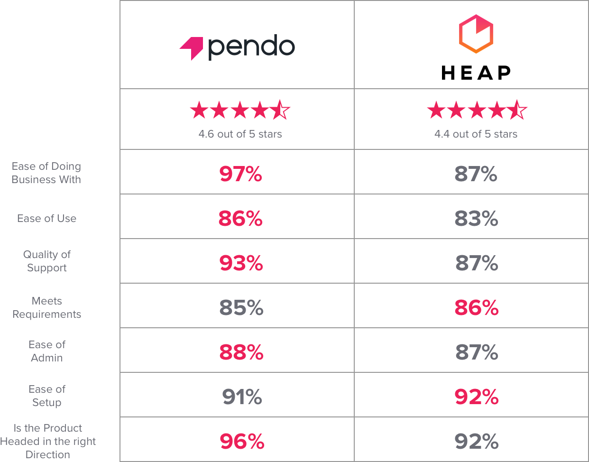

Unlike narrow point tools like Heap, Pendo offers a complete solution that helps product teams understand product usage, collect feedback, and use those insights to power in-app messages, guidance and walkthroughs.
Pendo's powerful usage analytics require no coding and unlike Heap, Pendo can run complex queries in seconds - even for large applications with thousands of users.
As a product leader, you need product data you can rely on, and you don’t have time to wait. Let us show you how!
The ratings below are based on user reviews collected by G2 Crowd as of January 4, 2018.
